Less is more
reduce $ and CO2
to improve performance 🚀 and joy 🥳
Source: personal archive - Iceland
The un-fun bit
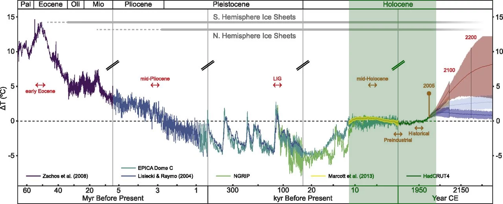
The costs in 2050
- $ trillions per year
- 19% loss to world economy
IT’s contribution
Source: AI-generated
IT’s contribution
- Datacenters: ±1% of global CO₂
- Datacenters: ±1-1.5% of global energy
- Networking: ±1-1.5% of global energy
IT’s contribution
- Datacenters: ±1% of global CO₂
- Datacenters: ±1-1.5% of global energy
- Networking: ±1-1.5% of global energy
…and growing
Enough doom & gloom
Let’s talk about something fun
Jan Ouwens

 │ EqualsVerifier │ jqno.nl │ 🦋jqno.nl
│ EqualsVerifier │ jqno.nl │ 🦋jqno.nl
Personal things
I’m not perfect 😢
I do my best
Personal things
Personal things
Google
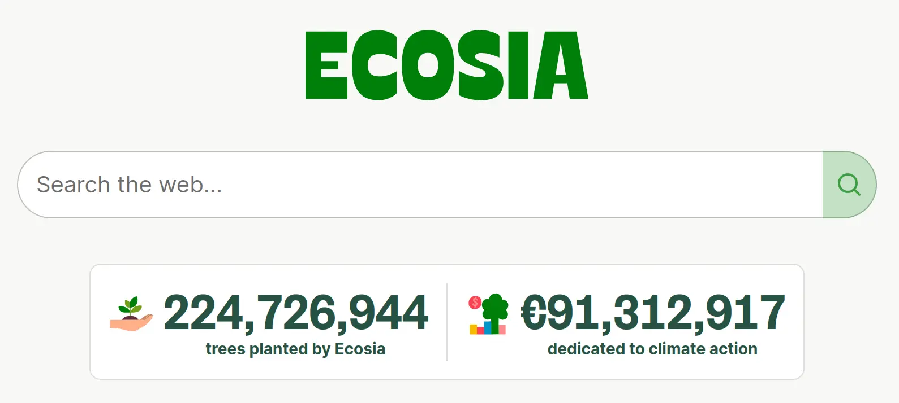
Source: ecosia.org
Personal things
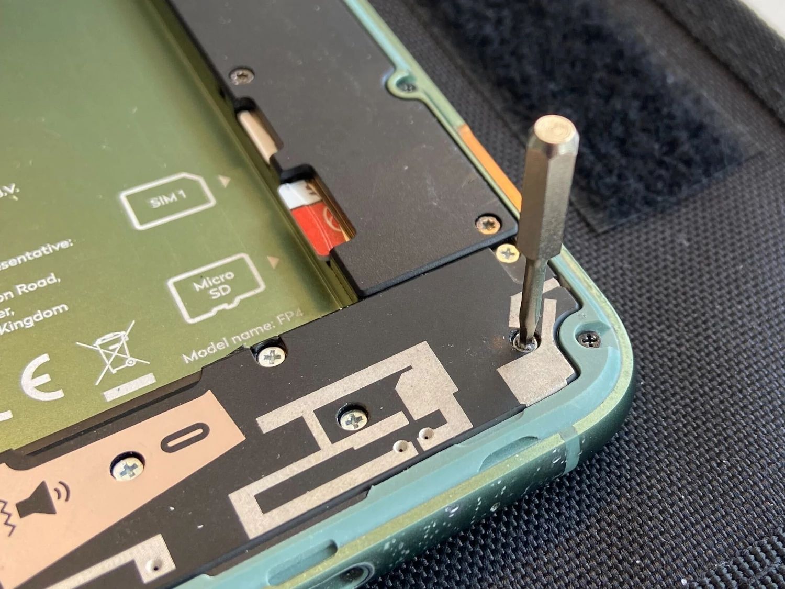
Source: personal archive
My place in this
80s
My place in this
90s
“640k ought to be enough for everyone”
My place in this
2000s
My place in this
Sources:
- personal archive
- https://commons.wikimedia.org/wiki/File:Nokia_3200_(transparent_bg).png
.png){kind=link}
Oulipo
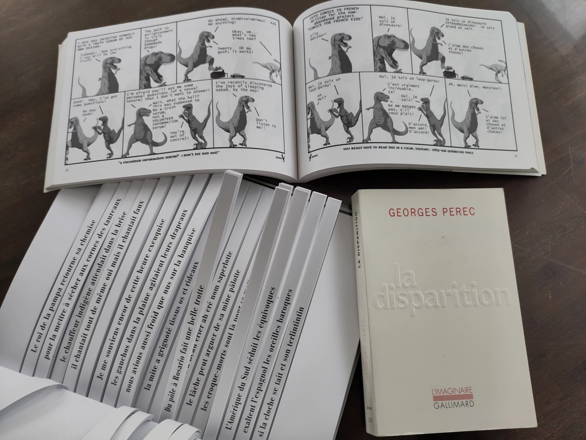
Source: personal archive
Constraints
They’re fun!
Moore’s law
- Machines got faster
- Constraints got thrown out
- Software got slower!?
Developers
We have power over things
many people don’t understand
Let’s use that power
The next slide
is the most
important one
Economic model of green software
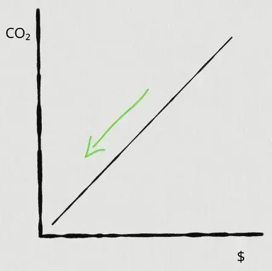
So what can we do!?
Stop chasing nines
Stop chasing nines
99.9% uptime
Stop chasing nines
99.99% uptime
Stop chasing nines
99.999% uptime
Stop chasing nines
99.999% uptime ??
Stop chasing nines
← Monday
Sunday →
Source: Reformatorisch Dagblad
Stop chasing nines
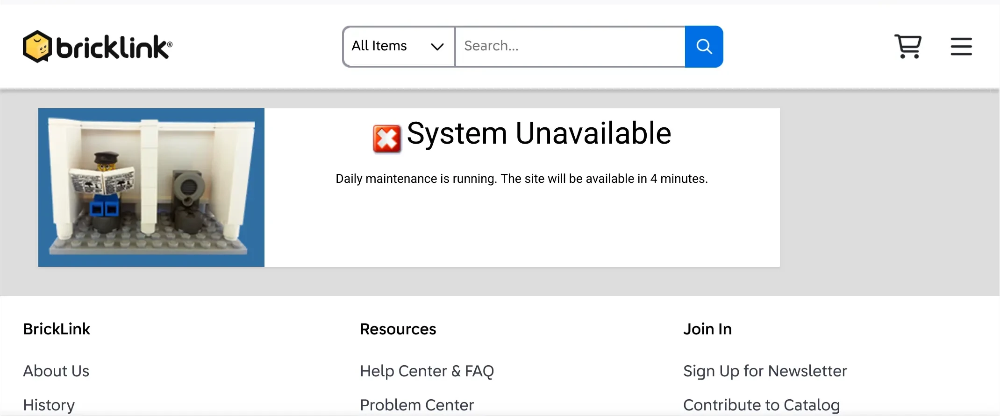
Source: Bricklink.com
Stop chasing nines
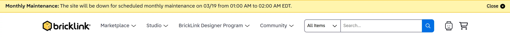
Source: Bricklink.com
Stop chasing nines
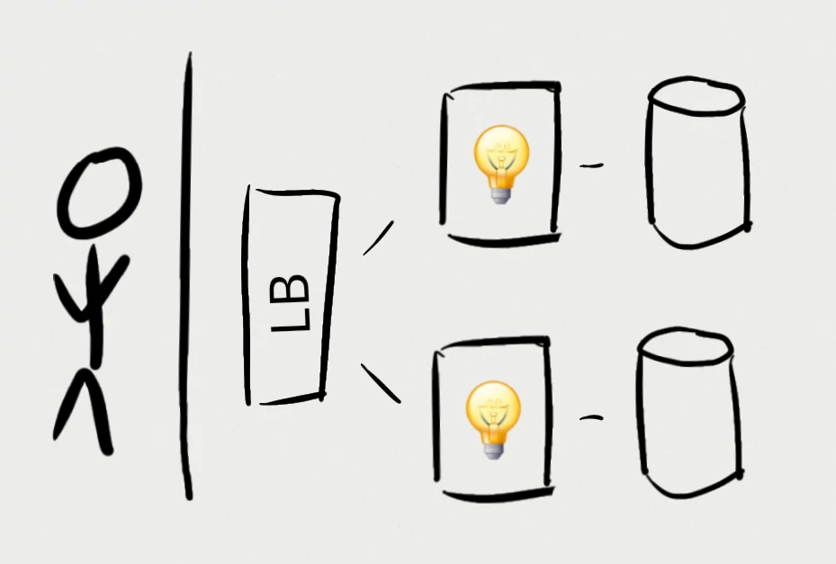
Stop chasing nines
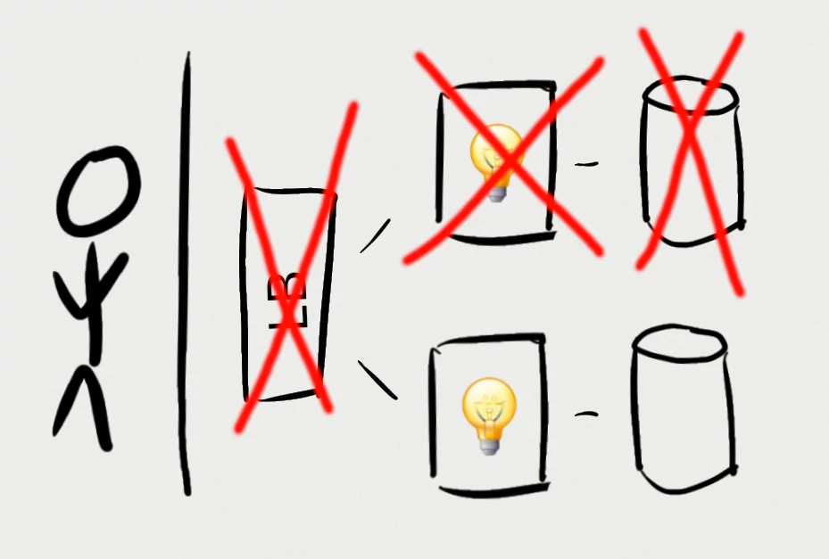
Stop chasing nines
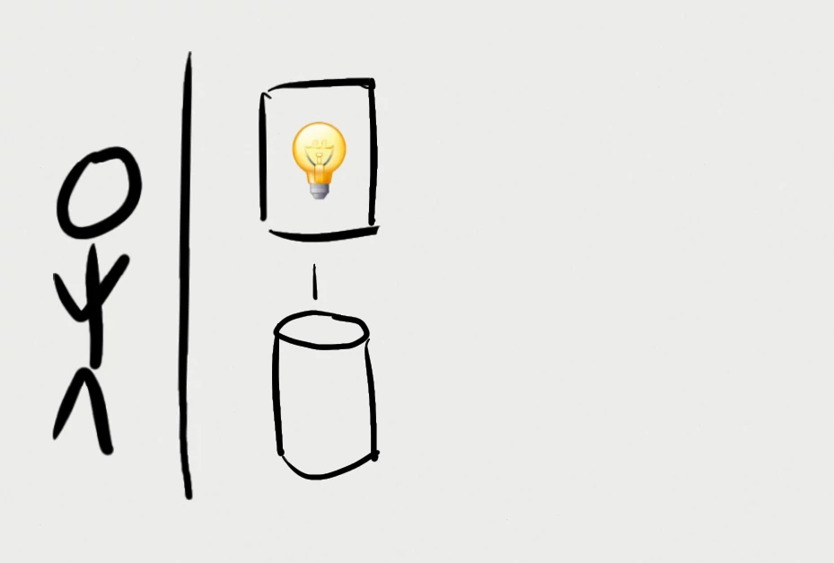
Stop chasing nines
Re-think your DB
Re-think your DB
Re-think your DB
SQLite is
- Stable
- Reliable
- Backward-compatible
- Billions(!) of deploys
Re-think your DB
 ❤️
❤️
Re-think your DB
Re-think your DB
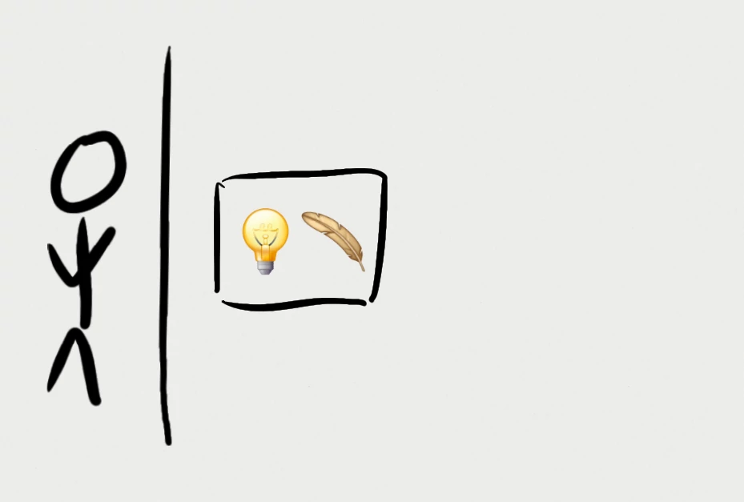
Re-think your DB
Cons:
- Must carefully tweak defaults
- Only one concurrent write
- Must arrange for backups
Re-think your DB
Pros:
- No DB server
- Simplicity
Re-think your DB
Make small Docker images
Make small Docker images
- Need to be stored
↳ embedded CO₂ - Need to be transmitted
↳ actual CO₂
Make small Docker images
public class Main {
public static void main(String...args) {
System.out.println("Hello World!");
}
}↓
Make small Docker images
| Tech | size |
|---|---|
| Hello world | 512MB |
Source: My minimal-docker repo
Make small Docker images
| Tech | size |
|---|---|
| Hello world | 512MB |
| Multi-stage | 426MB |
Source: My minimal-docker repo
Make small Docker images
| Tech | size |
|---|---|
| Hello world | 512MB |
| Multi-stage | 426MB |
| Minimal base | 202MB |
Source: My minimal-docker repo
Make small Docker images
| Tech | size |
|---|---|
| Hello world | 512MB |
| Multi-stage | 426MB |
| Minimal base | 202MB |
| JLink | 115MB |
Source: My minimal-docker repo
Make small Docker images
| Tech | size |
|---|---|
| Hello world | 512MB |
| Multi-stage | 426MB |
| Minimal base | 202MB |
| JLink | 115MB |
| GraalVM | 89MB |
Source: My minimal-docker repo
Make small Docker images
| Tech | size |
|---|---|
| Hello world | 512MB |
| Multi-stage | 426MB |
| Minimal base | 202MB |
| JLink | 115MB |
| GraalVM | 89MB |
| Single binary | 16MB |
Source: My minimal-docker repo
Make small Docker images
still…
16MB > 64KB
Make small Docker images
Enable build caching
Enable build caching
Enable build caching
Every time
Enable build caching
Many times
per day
Enable build caching
Many times
per hour
Enable build caching
Many other things
12 minutes is short!
Conclusion
That most important slide again
Economic model of green software
Results
- 🤑 Our bosses
- 🚀 Our software
- 💚 The world
- 🥳 Us
Thank you
¿ ?